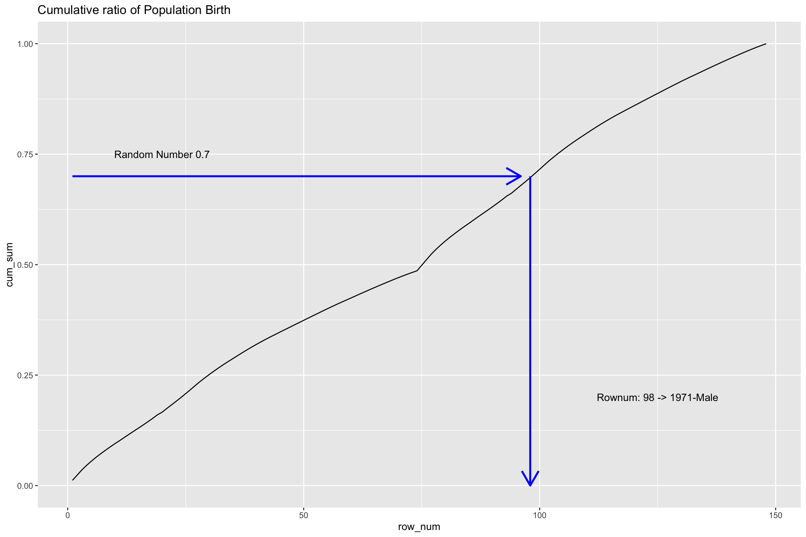
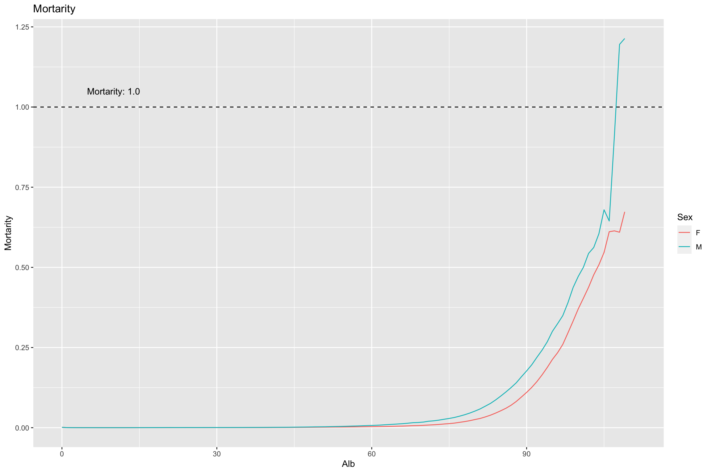
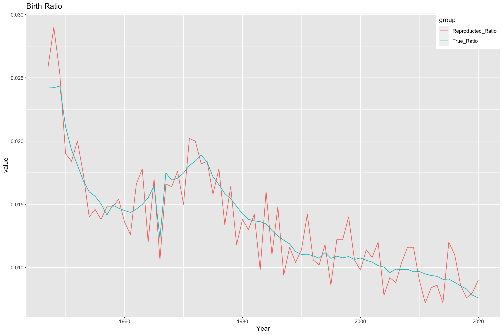

1 死亡率を推定しよう
1章です。擬似健康保険データを生成して、死亡率を推定します。
- 公的統計から、性別・年代別の出生・死亡比率を集計する
- 乱数を用いて、性別・年代別の出生・死亡の擬似データを生成する
- 擬似データを集計してみて、それっぽくなっているかどうか確認する
という手順です。
1.1 日本版死亡データベースの取得・集計
健保組合データを擬似生成するために、出生・死亡の公的統計を取得・集計します。
乱数でシミュレーションするために必要な情報を集計して求めていきます。
1.1.1 出生率データの取得
IPSSが公開している、年次出生数のデータを利用します。
library(readr)
library(dplyr)
url = 'http://www.ipss.go.jp/p-toukei/JMD/00/STATS/Births.txt'
df_birth = read.table(url, skip=2, header = TRUE)
df_birth %>% head## Year Female Male Total
## 1 1947 1301806 1376986 2678792
## 2 1948 1303060 1378564 2681624
## 3 1949 1316630 1380008 2696638
## 4 1950 1134396 1203111 2337507
## 5 1951 1043048 1094641 2137689
## 6 1952 977101 1028061 2005162ある年に、FemaleとMaleが何人生まれたかのデータになっています。
乱数を利用して、出生年と性別をサンプリングするために、情報を整理しておきます。
library(tidyr)
library(magrittr)
## 性別列を作って、縦持ちします。
df_birth %<>%
pivot_longer(cols = c("Male", "Female"), names_to = "Sex", values_to = "Life") %>%
mutate(Sex = if_else(Sex == "Female", "F", "M"))
df_birth %>% head## # A tibble: 6 × 4
## Year Total Sex Life
## <int> <int> <chr> <int>
## 1 1947 2678792 M 1376986
## 2 1947 2678792 F 1301806
## 3 1948 2681624 M 1378564
## 4 1948 2681624 F 1303060
## 5 1949 2696638 M 1380008
## 6 1949 2696638 F 1316630乱数でシミュレーションをするために、累積比率を出しておきます。
df_birth %<>%
arrange(Sex, Year) %>%
mutate(ratio = Life / sum(Life)) %>%
mutate(cum_sum = cumsum(ratio))
## あとで使うので保存しておく
df_birth %>%
select(-Total) %>%
write.csv("./data/ipss_birth.csv", row.names=FALSE, quote = FALSE)
## 内容確認
df_birth %>%
select(-Total) %>%
head(10)## # A tibble: 10 × 5
## Year Sex Life ratio cum_sum
## <int> <chr> <int> <dbl> <dbl>
## 1 1947 F 1301806 0.0118 0.0118
## 2 1948 F 1303060 0.0118 0.0235
## 3 1949 F 1316630 0.0119 0.0354
## 4 1950 F 1134396 0.0102 0.0457
## 5 1951 F 1043048 0.00942 0.0551
## 6 1952 F 977101 0.00883 0.0639
## 7 1953 F 910516 0.00822 0.0721
## 8 1954 F 858368 0.00775 0.0799
## 9 1955 F 841022 0.00760 0.0875
## 10 1956 F 809194 0.00731 0.0948この表を使うと、下図のように一様乱数と行番号を対応させることで、 (出生年、性別)を統計値の分布に沿って擬似生成することができます。
欲しい人数分だけ一様乱数を取れば、出生のデータが得られます。
library(ggplot2)
df_birth = read_csv("./data/ipss_birth.csv")
## 頑張って可視化する
df_birth %>%
mutate(x_axis = paste(Year, Sex, sep="")) %>%
mutate(row_num = 1:nrow(.)) %>%
ggplot() +
geom_line(aes(x = row_num, y = cum_sum), stat = "identity") +
annotate("segment",x=1,xend=96,y=0.7,yend=0.7,colour="blue",
size=1, arrow=arrow()) +
annotate("segment",x=98,xend=98,y=0.7,yend=0.0,colour="blue",
size=1,arrow=arrow()) +
annotate("text", x=20, y=0.75, parse=TRUE, label="'Random Number 0.7'") +
annotate("text", x=125, y=0.2, parse=TRUE, label="'Rownum: 98 -> 1971-Male'") +
ggtitle("Cumulative ratio of Population Birth")
次は、死亡データをサンプリングするための情報を整理します。
1.1.2 死亡データの取得と整形
次は、死亡率を算出します。
url_death_rate = "http://www.ipss.go.jp/p-toukei/JMD/00/STATS/Mx_1x1.txt"
df_mortality = read.table(url_death_rate, skip=2, header = TRUE)
df_mortality %>% head()## Year Age Female Male Total
## 1 1947 0 0.087397 0.099177 0.093428
## 2 1947 1 0.033721 0.034696 0.034218
## 3 1947 2 0.016993 0.016803 0.016897
## 4 1947 3 0.011411 0.011461 0.011436
## 5 1947 4 0.006917 0.007336 0.007130
## 6 1947 5 0.004937 0.005208 0.005075死亡率のデータは、Year年にX才だった人が1年後に死んでいる確率を表している…みたいです。 死亡率は毎年更新されるが、今回は簡単のために、2016年の死亡率でシミュレーションを行います。
df_mortality %<>%
filter(Year == 2016) %>%
select(-Year) %>%
select(-Total)
df_mortality %>% head()## Age Female Male
## 1 0 0.002029 0.001995
## 2 1 0.000310 0.000339
## 3 2 0.000173 0.000177
## 4 3 0.000098 0.000133
## 5 4 0.000087 0.000094
## 6 5 0.000083 0.000100よく見ると、Ageがchar型に判定されているので、確認します。
df_mortality$Age %>% table## .
## 0 1 10 100 101 102 103 104 105 106 107 108 109
## 1 1 1 1 1 1 1 1 1 1 1 1 1
## 11 110+ 12 13 14 15 16 17 18 19 2 20 21
## 1 1 1 1 1 1 1 1 1 1 1 1 1
## 22 23 24 25 26 27 28 29 3 30 31 32 33
## 1 1 1 1 1 1 1 1 1 1 1 1 1
## 34 35 36 37 38 39 4 40 41 42 43 44 45
## 1 1 1 1 1 1 1 1 1 1 1 1 1
## 46 47 48 49 5 50 51 52 53 54 55 56 57
## 1 1 1 1 1 1 1 1 1 1 1 1 1
## 58 59 6 60 61 62 63 64 65 66 67 68 69
## 1 1 1 1 1 1 1 1 1 1 1 1 1
## 7 70 71 72 73 74 75 76 77 78 79 8 80
## 1 1 1 1 1 1 1 1 1 1 1 1 1
## 81 82 83 84 85 86 87 88 89 9 90 91 92
## 1 1 1 1 1 1 1 1 1 1 1 1 1
## 93 94 95 96 97 98 99
## 1 1 1 1 1 1 1“110+”があって、文字に判定されています。 これは簡単のために111才にしておきます。人数は少ないので、大きな影響はないでしょうし。
df_mortality %<>%
mutate(Age = if_else(Age == "110+", "111", Age)) %>%
mutate(Anb = as.integer(Age)) %>%
select(-Age)
df_mortality %>% head## Female Male Anb
## 1 0.002029 0.001995 0
## 2 0.000310 0.000339 1
## 3 0.000173 0.000177 2
## 4 0.000098 0.000133 3
## 5 0.000087 0.000094 4
## 6 0.000083 0.000100 5AnbとAlbについては、…あとで追記します。年齢には２種類あるみたいです。
公的統計ではAnbなので、Albに直します。
\(x\)才のAnb死亡率\(q_x\)とすると、Alb死亡率は、\(\frac{q_x+q_{x+1}}{2}\)になります。
df_mortality %<>%
mutate(Female = as.numeric(Female)) %>%
mutate(Male = as.numeric(Male)) %>%
mutate(lead_Female = lead(Female)) %>%
mutate(lead_Male = lead(Male)) %>%
mutate(F = (Female + lead_Female)/2) %>%
mutate(M = (Male + lead_Male)/2) %>%
mutate(Alb = Anb) %>%
select(Alb,F,M)
df_mortality %>% head## Alb F M
## 1 0 0.0011695 0.0011670
## 2 1 0.0002415 0.0002580
## 3 2 0.0001355 0.0001550
## 4 3 0.0000925 0.0001135
## 5 4 0.0000850 0.0000970
## 6 5 0.0000810 0.0001050年次死亡率を可視化してみます。 横軸が年齢、縦軸が1年以内に死亡する確率です。
df_mortality %>%
pivot_longer(cols=c("F","M"), names_to = "Sex", values_to = "Mortarity") %>%
ggplot(aes(x = Alb, y = Mortarity, group = Sex, color = Sex)) +
geom_line() +
geom_hline(yintercept = 1.0, linetype = "dashed") +
annotate("text", x = 10, y = 1.05, label = 'Mortarity: 1.0') +
ggtitle("Mortarity")
高齢部分が不自然ですが(1.00を超えることはない…)、そういうものらしいです。100才以上は使わない、として切り捨てます。
最後に、シミュレーションで使うので、年次死亡率を月次死亡率に変換します。
年次死亡率を\(y\)、月次死亡率を\(x\)とすると、
\(y = 1 - (1-x)^{12}\)なので、\(x\)について解くと、\(x = 1 - (1-y)^{\frac{1}{12}}\)になります。
これにより、月次死亡率が得られました。
## 100才以上は切り捨て
df_mortality %<>%
filter(Alb < 100)
## 月次死亡率に変換
df_mortality %<>%
mutate(F = 1 - (1-F)**(1/12)) %>%
mutate(M = 1 - (1-M)**(1/12))
## 保存しておく
df_mortality %>% write.csv("./data/ipss_mortality.csv", quote=F, row.names = F)
df_mortality %>%
mutate(F = round(F, 7)) %>%
mutate(M = round(M, 7)) %>%
head## Alb F M
## 1 0 9.75e-05 9.73e-05
## 2 1 2.01e-05 2.15e-05
## 3 2 1.13e-05 1.29e-05
## 4 3 7.70e-06 9.50e-06
## 5 4 7.10e-06 8.10e-06
## 6 5 6.80e-06 8.80e-061.2 加入者情報レコードの擬似生成
出生と死亡をシミュレーションして、擬似健康保険加入者レコードを集積したデータセットを作成します。
1.2.1 関数を定義する
まずは、乱数でシミュレーションをするときに使う関数を定義しておきます。
日付<->数字の変換をよく行うので、関数化しておきます。
library(magrittr)
library(dplyr)
library(stringr)
library(purrr)
ym_to_t = function(yyyymm){
#' YYYY/MM の形の日付を、数字に変える関数 2022/07 -> 2022.05みたいな感じ
#'
#' @param yyyymm character : YYYY/MM or YYYY/M
#' @usage ym_to_t(yyyymm)
#' @return character (time value)
tmp = yyyymm %>% str_split("/") %>% .[[1]] %>% as.numeric()
tmp[2] = tmp[2] - 0.5
tmp[2] = tmp[2] / 12
as.character(sum(tmp)) %>% return
}
t_to_ym = function(time){
#' 数字をYYYY/MMに変える関数。2022.05 -> 2022/07 みたいな感じ
#'
#' @param time string or numeric : year value (ex. 2022) + month value (ex.0.3),
#' @usage t_to_ym(time)
#' @return character : "YYYY/MM"
time = as.numeric(time)
year = as.integer(time)
month = as.integer( (time - year) * 12 ) + 1
month = max(min(month, 12), 1)
paste(year, sprintf("%02d", month), sep = "/") %>% return
}
## テスト
tmp = c("2222/6", "2022/5")
df = data.frame(tmp1 = tmp)
df %>%
mutate(tmp2 = map_chr(.$tmp, ym_to_t)) %>%
mutate(tmp3 = map_chr(.$tmp2, t_to_ym))## tmp1 tmp2 tmp3
## 1 2222/6 2222.45833333333 2222/06
## 2 2022/5 2022.375 2022/051.2.2 出生のシミュレーション
前節で作成した出生シミュレーション用のデータを読み込みます。
library(readr)
df_birth = read_csv("./data/ipss_birth.csv")
df_birth %>% head## # A tibble: 6 × 5
## Year Sex Life ratio cum_sum
## <dbl> <chr> <dbl> <dbl> <dbl>
## 1 1947 F 1301806 0.0118 0.0118
## 2 1948 F 1303060 0.0118 0.0235
## 3 1949 F 1316630 0.0119 0.0354
## 4 1950 F 1134396 0.0102 0.0457
## 5 1951 F 1043048 0.00942 0.0551
## 6 1952 F 977101 0.00883 0.06390-1の乱数から、誕生年・性別を決めたいです。
1950年男性の累積出生割合が0.1、1951年男性の累積出生割合が0.2なら、 0.1<= (乱数) <= 0.2 だったときに、1951年男性が生まれたことにする、みたいな感じです。 乱数を生成して、leftとrightで挟めているところを探す、という戦略です。
## 0-1の値から、cumsumを参照して、行番号を返す仕組み
vec = df_birth$cum_sum
vec_ = c(0, vec[1:(length(vec)-1)])
dat_row = data.frame(row_num = 1:length(vec), left = vec_, right = vec)
df_birth$left = vec_
df_birth$right = vec
df_birth %>% select(-Life) %>% head## # A tibble: 6 × 6
## Year Sex ratio cum_sum left right
## <dbl> <chr> <dbl> <dbl> <dbl> <dbl>
## 1 1947 F 0.0118 0.0118 0 0.0118
## 2 1948 F 0.0118 0.0235 0.0118 0.0235
## 3 1949 F 0.0119 0.0354 0.0235 0.0354
## 4 1950 F 0.0102 0.0457 0.0354 0.0457
## 5 1951 F 0.00942 0.0551 0.0457 0.0551
## 6 1952 F 0.00883 0.0639 0.0551 0.0639次に、擬似生成のためのパラメータを設定します。
観察期間は、指数分布を使っていい感じに決めます。
pythonのnp.random.exponentialの引数muと、Rのrexpの引数rateは、逆数の関係らしいので、注意します。
## 観察期間
start_study_t = 2010 ## 2010年1月
end_study_t = 2019.999 ## 2019年12月
mu = 10 ## 指数分布のパラメータ 観察開始/終了期間が決まる
rate = 1/mu
N = 5000 ## 全体の人数
family_ratio = 0.3 ## 被扶養者が占める割合乱数で保険者を生成します。誕生年の分布は、df_birthに従わせます。
N_ = N * 20 ## 適当に増やしておく。
set.seed(71)
## 乱数だけ作っておく
random_value = runif(N_)
df_exposure = data.frame(value = random_value)
## 誕生月判定と、曝露期間の設定を行います。
## 乱数の値が累積比率の値に挟まれている : left <= value <= right なところを探すことで、
## 乱数と行の対応関係が得られます。非効率ですが...
df_exposure = df_exposure %>%
merge(df_birth, all = TRUE) %>%
filter(left <= value) %>%
filter(value <= right) %>%
select(-left, -right, -value) %>%
mutate(value = runif(nrow(.))) %>%
mutate(value = Year + value) %>%
mutate(birth_ym = map_chr(value, t_to_ym)) %>%
mutate(value1 = rexp(nrow(.), rate = rate)) %>%
mutate(value2 = rexp(nrow(.), rate = rate)) %>%
mutate(start_t = start_study_t - mu + value1) %>%
mutate(end_t = start_t + value2) %>%
filter(start_t >= start_study_t) %>%
filter(end_t <= end_study_t) %>%
mutate(start_obs_ym = map_chr(start_t, t_to_ym)) %>%
mutate(end_obs_ym = map_chr(end_t, t_to_ym))
df_exposure %>% head## Year Sex Life ratio cum_sum value birth_ym value1
## 1 1947 F 1301806 0.01175801 0.01175801 1947.197 1947/03 11.06787
## 2 1947 F 1301806 0.01175801 0.01175801 1947.455 1947/06 13.46310
## 3 1947 F 1301806 0.01175801 0.01175801 1947.102 1947/02 10.70483
## 4 1947 F 1301806 0.01175801 0.01175801 1947.495 1947/06 16.09096
## 5 1947 F 1301806 0.01175801 0.01175801 1947.439 1947/06 11.86268
## 6 1947 F 1301806 0.01175801 0.01175801 1947.684 1947/09 18.95382
## value2 start_t end_t start_obs_ym end_obs_ym
## 1 8.1800011 2011.068 2019.248 2011/01 2019/03
## 2 4.6694234 2013.463 2018.133 2013/06 2018/02
## 3 0.2781220 2010.705 2010.983 2010/09 2010/12
## 4 0.4163880 2016.091 2016.507 2016/02 2016/07
## 5 1.9577900 2011.863 2013.820 2011/11 2013/10
## 6 0.3676468 2018.954 2019.321 2018/12 2019/04被扶養者かどうかも乱数で決めて、IDも付与します。
## 被扶養者判定と、後処理
df_exposure = df_exposure %>%
mutate(value = runif(nrow(.))) %>%
mutate(family = if_else(value < family_ratio, 2, 1 )) %>% ## 1なら本人
select(-value, -value1, -value2, -start_t, -end_t) %>%
mutate(iid = 1:nrow(.)) %>%
mutate(iid = paste("i", sprintf("%06d", iid), sep = ""))
## 整形
df_exposure =
df_exposure %>%
select(iid, Sex, birth_ym, start_obs_ym, end_obs_ym)
## 行数の確保
df_exposure =
df_exposure %>% sample_n(size = N, replace = FALSE)
df_exposure %>% head## iid Sex birth_ym start_obs_ym end_obs_ym
## 1 i000800 F 1955/11 2011/01 2016/09
## 2 i005929 M 1959/01 2016/08 2018/03
## 3 i003572 F 1996/02 2011/04 2015/01
## 4 i007193 M 1975/02 2013/10 2019/12
## 5 i007360 M 1976/10 2012/11 2014/12
## 6 i001612 F 1967/04 2010/08 2013/08いい感じですね。
1.2.3 出生比率の確認
df_birthで集計した真の誕生年比率と、擬似生成した誕生比率を比較してみます。
まずは、擬似生成したデータで、出生比率を集計します。
## 擬似生成したデータの誕生年比率集計
df_reproducted_birth =
df_exposure %>%
select(birth_ym) %>%
mutate(birth_year = as.integer(substr(birth_ym, 1, 4))) %>%
select(-birth_ym) %>%
group_by(birth_year) %>%
count() %>%
mutate(Reproducted_Ratio = n/N) %>%
mutate(Year = birth_year) %>%
ungroup() %>%
select(-n, -birth_year) %>%
select(Year, Reproducted_Ratio)
df_reproducted_birth %>% head## # A tibble: 6 × 2
## Year Reproducted_Ratio
## <int> <dbl>
## 1 1947 0.0258
## 2 1948 0.029
## 3 1949 0.0254
## 4 1950 0.019
## 5 1951 0.0184
## 6 1952 0.02次に、真のデータで、出生比率を集計します。
## 真の誕生年比率の集計
df_true_birth =
df_birth %>%
group_by(Year) %>%
summarise(True_Ratio = sum(ratio)) %>%
mutate(Year = as.integer(Year))
df_true_birth %>% head## # A tibble: 6 × 2
## Year True_Ratio
## <int> <dbl>
## 1 1947 0.0242
## 2 1948 0.0242
## 3 1949 0.0244
## 4 1950 0.0211
## 5 1951 0.0193
## 6 1952 0.0181可視化して見た目を比べます。
df_birth_compare = merge(df_reproducted_birth, df_true_birth, by = "Year")
library(tidyr)
## 縦持ちして、ggplotします
df_birth_compare_long =
df_birth_compare %>%
gather(group, value, -Year)
library(ggplot2)
df_birth_compare_long %>%
ggplot(aes(x = Year, y = value, color = group)) +
geom_line() +
ggtitle("Birth Ratio") +
theme(legend.position = c(1, 1),
legend.justification = c(1, 1))
…まあ、真の値から上下にブレている…かな…？
1966年は丙午ですね。これで、出生のシミュレーションができました。
1.2.4 死亡のシミュレーション
次に、死亡をシミュレーションします。月次死亡率を取得します。
df_mortality = read_csv("data/ipss_mortality.csv")
df_mortality %<>%
gather(sex, mortality, -Alb) %>%
mutate(key = paste(Alb, sex, sep = "_"))
df_mortality %>% head## # A tibble: 6 × 4
## Alb sex mortality key
## <dbl> <chr> <dbl> <chr>
## 1 0 F 0.0000975 0_F
## 2 1 F 0.0000201 1_F
## 3 2 F 0.0000113 2_F
## 4 3 F 0.00000771 3_F
## 5 4 F 0.00000708 4_F
## 6 5 F 0.00000675 5_F年齢ごとに、一定確率で死亡するので、これをシミュレーションします。
## 観察期間全体の期間を作成する
date_vec = seq(as.Date("2010/01/01"), as.Date("2019/12/01"), by = "month")
df_month = data.frame(date = date_vec)
df_month %>% head## date
## 1 2010-01-01
## 2 2010-02-01
## 3 2010-03-01
## 4 2010-04-01
## 5 2010-05-01
## 6 2010-06-01誕生日から年齢が計算できるので、各月で当該年齢の死亡率が得られて、乱数で死亡判定ができます。
まずは、月毎に、その時の年齢を計算して、死亡率を付与していきます。
## 月次死亡確率を付与しておく
df_exposure_mortality =
df_exposure %>%
merge(df_month, all = True) %>%
mutate(birth_tmp = paste(birth_ym, "/01", sep = "")) %>%
mutate(age = (as.Date(date) - as.Date(birth_tmp)) / 365) %>%
mutate(age = as.integer(age)) %>%
mutate(key = paste(age, Sex, sep = "_")) %>%
merge(df_mortality, by = "key") %>%
select(-key, -Alb, -birth_tmp, -Sex)
df_exposure_mortality %>% select(-start_obs_ym, -end_obs_ym) %>% head()## iid birth_ym date age sex mortality
## 1 i004620 2018/07 2017-09-01 0 F 9.751061e-05
## 2 i004310 2011/02 2011-08-01 0 F 9.751061e-05
## 3 i004576 2017/08 2018-06-01 0 F 9.751061e-05
## 4 i004536 2016/10 2016-04-01 0 F 9.751061e-05
## 5 i004576 2017/08 2018-04-01 0 F 9.751061e-05
## 6 i004675 2019/10 2019-01-01 0 F 9.751061e-05乱数で死亡判定をします。
## 乱数で、死亡判定をする
df_death_date =
df_exposure_mortality %>%
mutate(value = runif(nrow(.))) %>%
mutate(value = value) %>%
mutate(death_flg = value < mortality) %>% ## 乱数で死亡判定する
arrange(iid, date) %>% ## 最初に死亡した時を調べるために、idごとに処理する
group_by(iid) %>%
mutate(val = cumsum(death_flg)) %>% ## 最初に0->1になるところで死亡している
mutate(val = cumsum(val)) %>% ## 2回cumsumを取れば、↑は==1のところになる
filter(val == 1) %>%
select(iid, death_date = date)
df_death_date %>% head()## # A tibble: 6 × 2
## # Groups: iid [6]
## iid death_date
## <chr> <date>
## 1 i000037 2019-07-01
## 2 i000105 2010-11-01
## 3 i000106 2018-05-01
## 4 i000116 2012-08-01
## 5 i000123 2013-10-01
## 6 i000139 2017-04-01最初に死亡判定されたところを抽出しています。 cumsumを2回重ねがけするテクニックは、いいですね。
1.2.5 日付の整合性チェック
最後に、出生・死亡と、観察期間との整合性をとります。
## 観察期間との整合性をとる。
## 死亡していたら、観察期間は死亡日よりも前
## 観察期間より前に死亡していたら、無視する (それより前に死亡している可能性もありそうだが...)
df_exposure_death =
df_exposure %>%
left_join(df_death_date, by = "iid") %>%
mutate(start_obs_ym = paste(start_obs_ym, "/01", sep = "")) %>%
mutate(end_obs_ym = paste(end_obs_ym, "/01", sep = "")) %>%
mutate(birth_ym = paste(birth_ym, "/01", sep = "")) %>%
mutate(start_obs_ym = as.Date(start_obs_ym)) %>%
mutate(end_obs_ym = as.Date(end_obs_ym)) %>%
mutate(birth_ym = as.Date(birth_ym)) %>%
mutate(tmp = if_else(is.na(death_date), as.Date("2199/12/31"), death_date)) %>%
mutate(end_obs_ym = if_else(end_obs_ym > tmp, death_date - 30, end_obs_ym)) %>%
mutate(start_obs_ym = if_else(start_obs_ym < birth_ym, birth_ym, start_obs_ym)) %>%
filter(start_obs_ym < tmp) %>%
select(-tmp)
## 保存しておく
df_exposure_death %>% write.csv("./data/pseudo_medical_record.csv", quote = FALSE, row.names = FALSE)
## 内容確認
df_exposure_death %>% head## iid Sex birth_ym start_obs_ym end_obs_ym death_date
## 1 i000800 F 1955-11-01 2011-01-01 2016-09-01 <NA>
## 2 i005929 M 1959-01-01 2016-08-01 2018-03-01 <NA>
## 3 i003572 F 1996-02-01 2011-04-01 2015-01-01 <NA>
## 4 i007193 M 1975-02-01 2013-10-01 2019-12-01 <NA>
## 5 i007360 M 1976-10-01 2012-11-01 2014-12-01 <NA>
## 6 i001612 F 1967-04-01 2010-08-01 2013-08-01 <NA>それっぽいものはできました…が、
- 観測期間後に死亡した人の扱い
- 観測期間前に死亡した人の扱い
が気になります。調べておきます。
1.3 まとめ
公的統計のデータを用いて、出生、死亡のシミュレーションをして、擬似データを生成しました。
2 1-3 信頼区間の計算…の準備
死亡率の推定を行う…前に、ちょっと実験しておきます。
推定したい確率が小さい場合、推定の精度を十分に(信頼区間が±10%程度/0や1を跨がない/etc…)算出したい場合は、大量のエクスポージャが必要になります。
どの程度エクスポージャが必要か、試しに実験してみます。
2.0.1 死亡率の信頼区間
エクスポージャ\(l\), 死亡率\(q\)で、死亡数\(d\)が二項分布\(Bi(l,q)\)に従うとするとき、死亡数の期待値\(E[d]\)と分散\(V[d]\)は、
\[ \begin{align} E[d] &= lq \\ V[d] &= lq(1-q) \end{align} \]
となります。そして、二項分布が正規分布に近似可能なとき(この条件は?)、二項分布の信頼区間は、\(p=\phi_{(z)}\)を標準正規分布累積分布関数、\(z_{p}\)をその逆関数として、 \[ P\left[ \frac{|d - E[d]|}{\sqrt{V[d]}} < z_{1 - \frac{\epsilon}{2}}\right] \sim 1-\epsilon \] と表せます。\(\epsilon = 0.05\)のとき、\(z_{0.975} = 1.96\)です。検定の時よく使う数字ですね。上側2.5%の上限値です。
この式を変形していくと、死亡\(q = \frac{E[d]}{l}\)の範囲が求まります。
\[ \begin{align} 1 - \epsilon &= P\left[ (d-E[d])^2 < z^2 V[d] \right] \\ &= P\left[d - z\sqrt{V[d]} < E[d] < d + z\sqrt{V[d]} \right] \\ &= P\left[ \frac{d - z\sqrt{V[d]}}{l} < q < \frac{d + z\sqrt{V[d]}}{l} \right] \end{align} \]
なので、\(q\)の範囲が求まりそうです。
実務的には、\(V\)に観測値を代入することで近似的に範囲を得ることがある…みたいです。 が、\(\epsilon\)を小さくすると\(z_{1-\frac{\epsilon}{2}} \rightarrow \infty\)になるので、 \(\epsilon\)の値によっては信頼区間が大きくなることがあります。
2.0.2 信頼区間の精緻な計算
厳密に計算してみます。 \[ \begin{align} 1 - \epsilon &= P\left[ (d-E[d])^2 < z^2 V[d] \right] \\ &= P\left[(d-lq)^2 < z^2 lq(1-q) \right] \\ &= P\left[ (l^2 + z^2l)q^2 - (2dl+z^2l)q + d^2 < 0 \right] \end{align} \]
です。 放物線がy軸の下側にある区間…なので、2次方程式の解の間ですね。頑張って解きましょう。
\[ \begin{gather} & \frac{(2dl + z^2l) - \sqrt{D}}{2(l^2 + z^2l)} < q < \frac{(2dl + z^2l) +\sqrt{D}}{2(l^2 + z^2l)} \\ & D = (2dl + z^2l)^2 - 4(l^2 + z^2l)d^2 \end{gather} \]
と表すことができました。厳密な式だと、信頼区間が0や1をはみ出さないはずですが、確認してみましょう。
我慢して\(D\)の計算を進めて、\(q\)を綺麗に表してみると、
\[ \begin{align} \frac{(2dl + z^2l) - 2lz\sqrt{d + \frac{z^2}{4} - \frac{d^2}{l}}}{2(l^2 + z^2l)} < &q < \frac{(2dl + z^2l) + 2lz\sqrt{d + \frac{z^2}{4} - \frac{d^2}{l}}}{2(l^2 + z^2l)} \\ \frac{(d + \frac{z^2}{2}) - z\sqrt{d + \frac{z^2}{4} - \frac{d^2}{l}}}{l + z^2} < &q < \frac{(d + \frac{z^2}{2}) + z\sqrt{d + \frac{z^2}{4} - \frac{d^2}{l}}}{l + z^2} \\ \end{align} \] となりました。
極端な例として、\(\epsilon \rightarrow 1\)の時は、\(z\rightarrow 0\)で、$ q $、 \(\epsilon \rightarrow 1\)の時は、\(z \rightarrow \infty\)で、\(0 < q < 1\)となり、ちゃんと確率っぽい区間になりました。